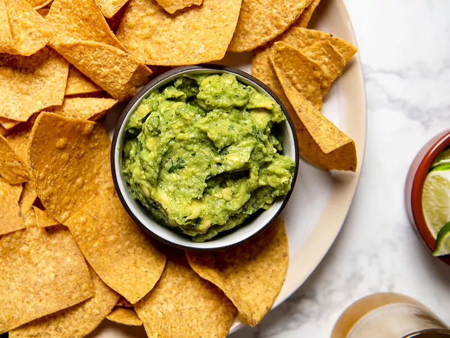

Guacamole
Home

Description
"Guacamole simple means 'pureed avocado sauce,'" says Zarela Martinez, the famed cookbook author, restaurateur, and an authority on Mexican cooking. "It doesn't have an official recipe." The word comes from the Aztec Nahuatl words for avocado (ahuacatl) and sauce (molli), which, as Martinez points out, describes what is essentially a mole made from avocados.
At its most basic, it requires little more than avocados and serrano or jalapeño chiles—traditionally mashed in a large basalt mortar and pestle—and some salt. The Aztecs were preparing it this way 500 years ago, making guacamole one of the oldest, if not the oldest, traditional foods of the Americas still being made today (and damn if we don't love the stuff: in the month leading up to Superbowl Sunday, it's estimated that americans consume as much as 250 million pounds of avocados, much of it in the form of guacamole).
Ingredients
- Half of 1 medium white onion (about 4 ounces; 113g), roughly chopped
- 1 serrano chile, stemmed and roughly chopped (remove seeds before chopping for a less hot result)
- Kosher salt
- 4 ripe Hass avocados (about 7 ounces; 200g each)
- 2 to 3 tablespoons (30-45ml) fresh lime juice (from about 2 limes)
Steps
- Place onion, chile, half of cilantro leaves, and a large pinch of salt in a molcajete or mortar and pestle. Pound into a fine paste. Alternatively, combine onion, chile, half of cilantro, salt, and half of lime juice in a food processor or blender and process, scraping down sides as necessary, until smooth paste is formed.
- Split each avocado in half, discard pits, and spoon out flesh into the molcajete or mortar and pestle (if large enough), or combine with the onion-chile purée in a medium mixing bowl. Roughly mash with the pestle or a stiff whisk.
- Stir in remaining cilantro leaves, then season with lime juice and salt to taste. Serve immediately with warm tortilla chips or as desired.